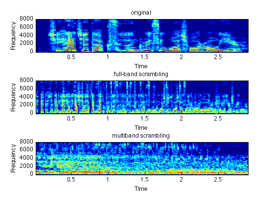

Time-domain scrambling of audio signals in Matlab
These routines scramble an audio file by moving around short, overlapping windows within a local window. They can be used to create new versions of existing recordings that preserve the spectral content over longer time scales, but remove structure at shorter timescales. This can be useful e.g. for making speech unintelligible.
Contents
Simple time-domain scrambling
The main routine shufflewins takes a waveform, chops it into a set of short windows (with 50% overlap), tapers them with a raised cosine window, shuffles them, then re-overlaps them. The shuffling order is determined by localperm which behaves like the Matlab built-in randperm, except it controls the distribution of the difference between original and final window positions to be approximately Gaussian with a variance specified by the user. Breaking the waveform into overlapped short windows is accomplished by frame, and the shuffled windows are reconstructed by ola. Thus, to shuffle a full-band audio signal:
% Load some speech [d,sr] = wavread('speech.wav'); % Shuffle 25 ms windows over a 250ms radius y = shufflewins(d,round(sr*.025),round(sr*.25)); % Listen back soundsc(y,sr);
Multi-band scrambling
For added scrambling, the signal can be broken into multiple frequency bands, separately scrambled in each band, then recombined. A suitable choice for frequency decomposition is to use gammatone filters, which are a linear approximation to the frequency resolution of the ear. We used slightly-modified versions of MakeERBFilters and ERBFilterBank (which rely on ERBSpace) from Malcolm Slaney's Auditory Toolbox The modifications are to allow us to use "time-reversed filtering" to remove the phase effects of the Gammatone ERB filters: we design the filters to have wider bandwidth than normal, then we filter each band twice, once forwards and once backwards in time.
% Set up Gammatone filterbank with 64 bands from Nyquist to 50 Hz % Scale bandwidths to be 1.5 x normal, so the effect of filtering % both forward and backwards is approximately the bandwidth of a % single forward pass, at least in the top 10 dB. fcoefs = MakeERBFilters(sr,64,50,1.5); % Break the speech into subbands using the filters % Each row of dsub is one of the 64 band-passed signals dsub = ERBFilterBank(d,fcoefs); % Pass each subband signal back through the same filter, but % backwards in time, then flip them again dsub2 = fliplr(ERBFilterBank(fliplr(dsub),fcoefs)); % sum(dsub2) is now a pretty good approximation to the original d soundsc(sum(dsub2),sr); % .. but now we can scramble each subband independently for i = 1:size(dsub2,1); ... ysub(i,:) = shufflewins(dsub2(i,:),round(sr*.025),round(sr*.25)); ... end % sum up scrambled subbands to get a full-band signal y2 = sum(ysub); % take a listen soundsc(y2,sr); % Plot the results subplot(311) specgram(d,512,sr); caxis([-50 10]); title('original'); subplot(312) specgram(y,512,sr); caxis([-50 10]); title('full-band scrambling'); subplot(313) specgram(y2,512,sr); caxis([-50 10]); title('multiband scrambling');
Download
You can download all the code and data for these examples here: scramble.tgz.
Referencing
If you use this work in a publication, I would be grateful if you referenced this page as follows:
-
D. P. W. Ellis (2010).
Time-domain scrambling of audio signals in Matlab",
web resource: http://www.ee.columbia.edu/~dpwe/resources/matlab/scramble/
We first proposed spectrum-preserving, intelligibility-removing scrambling for privacy protection of audio lifelogs in:
-
D. Ellis and K.S. Lee (2004).
"Minimal-Impact Audio-Based Personal Archives",
First ACM workshop on Continuous Archiving and Recording of Personal Experiences CARPE-04,
New York, Oct 2004, pp. 39-47.
We got the idea of applying this independently in Gammatone subbands from:
-
Y. Minagawa-Kawai, H. van der Lely, F. Ramus, Y. Sato, R. Mazuka,
and E. Dupoux (2010).
"Optical Brain Imaging Reveals General Auditory and Language-Specific Processing in Early Infant Development",
Cereb. Cortex, advance access, 2010.
Acknowledgment
This project was supported in part by the NSF under grant IIS-0716203. Any opinions, findings and conclusions or recommendations expressed in this material are those of the authors and do not necessarily reflect the views of the Sponsors.
% Last updated: $Date: 2010/11/14 01:23:46 $ % Dan Ellis <dpwe@ee.columbia.edu>